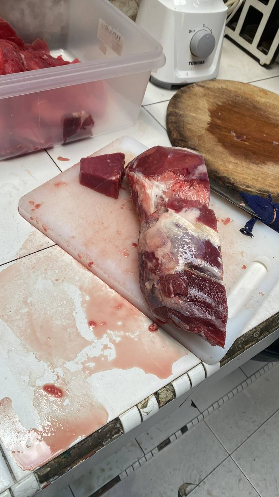
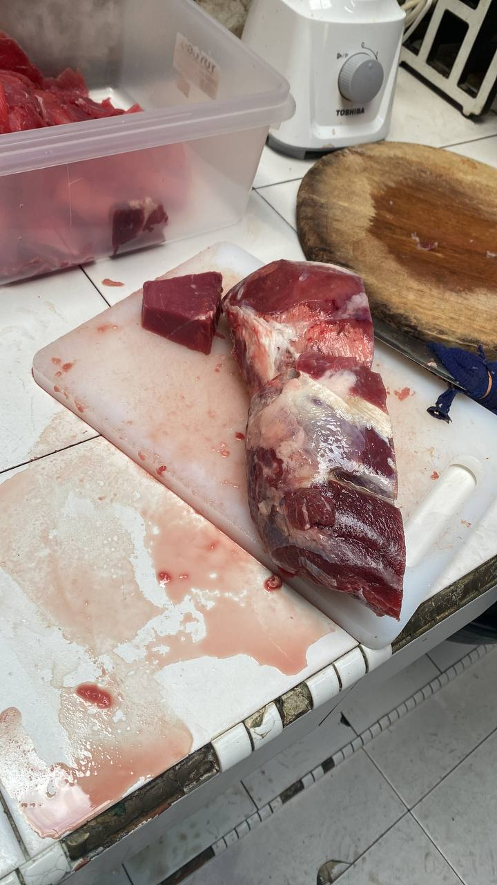
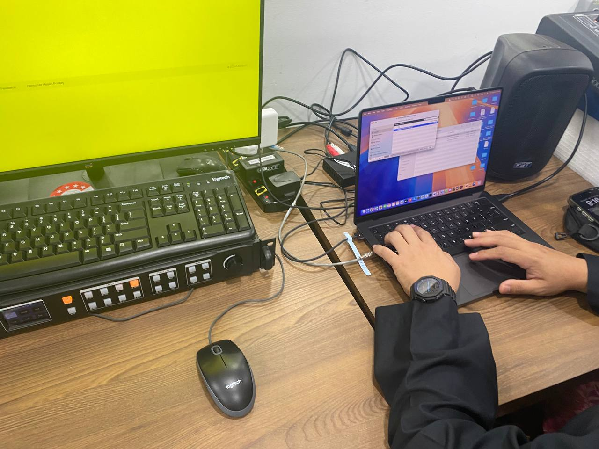
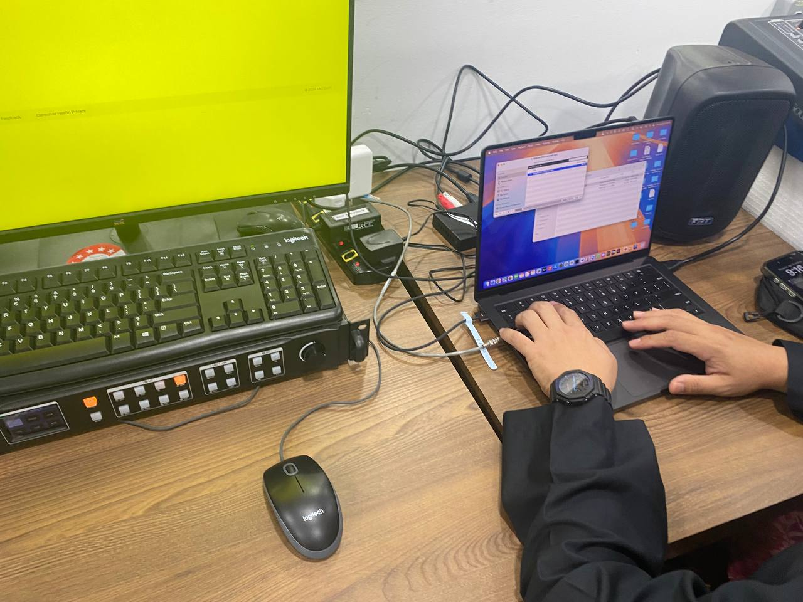

Hi, My Name is Adam Sufi
Welcome to my personal profile website!
Welcome to my personal profile website!
Name: Adam Sufi bin Abdul Aziz
Age: 20
Location: Johor Bahru, Johor
Siblings: 5 siblings
About Me: I'm an enthusiastic and curious individual with a passion for technology and creativity. I enjoy exploring new things and constantly strive to improve myself.
Hobbies: Besides sports and enjoying sunsets, I am passionate about coding, exploring new software tools, and photography.
Academic Goals: I am currently pursuing a Bachelor's degree in Information Technology and aim to specialize in web development and data analysis.
Career Aspirations: My dream is to work as a software developer in a leading tech company and contribute to building impactful digital solutions.
Fun Fact: I'm a huge fan of Cristiano Ronaldo and never miss watching his matches!

Futsal: I enjoy playing street soccer with my friends. It's a great way to stay active and bond with others.

Table Tennis: Playing table tennis during the semester helps me stay sharp and unwind from studies.

Beach: Spending time at the beach, enjoying sunsets with friends, is incredibly relaxing and peaceful.


Currently pursuing Diploma in Information Management at UiTM Johor Segamat branch.
| Picture | Description |
|---|---|
     |
Barista/Meat Cutter/Cahsier
|
     |
Internship - Web Developer
|
   |
Mobile Legend Competition - UiTM Level
|
My family has always been my biggest source of inspiration and support. We share countless memories filled with joy, laughter, and valuable life lessons. Growing up with five siblings has taught me the importance of love, patience, and teamwork. Each family member has a unique personality that makes our bond even stronger.